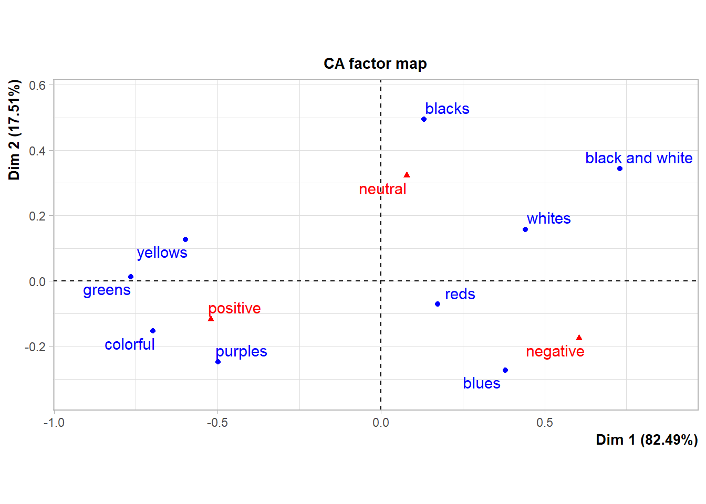

5 Lyric Sentiments
require(tidytext)
require(stringr)
require(sentimentr)
require(corrr)
require(viridis)
require(scales)
require(taylor)## taylor_album_songs from taylor package
lyrics_df <- taylor_album_songs %>%
unnest(lyrics) %>%
select(album_name, track_name, track_number, line, lyric, element)
lyrics_df$row_id <- 1:nrow(lyrics_df)
sentences_with_id <- get_sentences(lyrics_df$lyric, lyrics_df$row_id) # this processes
## each line as its own sentence as it's using the row_id.
sentiment_with_id <- sentiment(sentences_with_id)
sentiment_summary <- sentiment_with_id %>%
group_by(element_id) %>%
summarise(
avg_sentiment = mean(sentiment, na.rm = TRUE),
word_count = sum(word_count)
)
## Join
lyrics_sentiment <- lyrics_df %>%
left_join(sentiment_summary, by = c("row_id" = "element_id"))
## Aggregate by song to get net sentiment score
song_sentiment_scores_sentimentr <- lyrics_sentiment %>%
group_by(track_number, track_name, album_name) %>%
summarize(
sum_sentiment = sum(avg_sentiment),
total_sentiment_words = n(),
avg_sentiment = sum(avg_sentiment) / n(),
.groups = "drop"
)albumOrder <- c("Taylor Swift", "Fearless (Taylor's Version)",
"Speak Now (Taylor's Version)", "Red (Taylor's Version)",
"1989 (Taylor's Version)", "Reputation", "Lover",
"folklore", "evermore", "Midnights",
"THE TORTURED POETS DEPARTMENT")
lyrics_sentiment <- lyrics_sentiment %>%
mutate(album_name = factor(album_name, levels = albumOrder))
lyrics_sentiment <- lyrics_sentiment %>%
filter(!is.na(album_name))
## Then plot the net sentiment scores
ggplot(lyrics_sentiment, aes(x = track_number, y = avg_sentiment, fill = album_name)) +
geom_col(show.legend = FALSE) +
facet_wrap(~album_name, ncol = 3, scales = "free") +
scale_fill_manual(values = colorPaletteAlbums) +
theme_minimal() +
labs(
title = "The emotional spectrum across Taylor Swift's discography",
x = "Track Number",
y = "Net Sentiment (Positive - Negative Words)"
) +
theme(plot.title = element_text(hjust=0.5))
song_sentiments <- lyrics_sentiment %>%
group_by(album_name, track_name) %>%
summarise(
weighted_sentiment_lyric = sum(avg_sentiment * word_count, na.rm = TRUE) / sum(word_count, na.rm = TRUE),
total_words = sum(word_count, na.rm = TRUE),
.groups = "drop"
) %>%
filter(!is.na(weighted_sentiment_lyric))
surpriseSongsDressColours <- surpriseSongsDressColours %>%
mutate(DressColourGroup = case_when(
DressName %in% c("Pink", "Flamingo pink") ~ "Reds",
DressName %in% c("Blue", "Ocean blue") ~ "Blues",
DressName %in% c("Yellow", "Sunset orange") ~ "Yellows",
DressName %in% c("Cotton candy", "Grapefruit", "Popsicle") ~ "Colourful",
DressName == "Blurple" ~ "Purples",
DressName == "Green" ~ "Greens"
))
dress_song_sentiments <- surpriseSongsDressColours %>%
left_join(song_sentiments, by = c("Song title" = "track_name")) %>%
filter(!is.na(weighted_sentiment_lyric))
dress_group_sentiments <- dress_song_sentiments %>%
group_by(DressColourGroup) %>%
summarise(
performance_weighted_sentiment = mean(weighted_sentiment_lyric, na.rm = TRUE),
n_performances = n(),
.groups = 'drop'
)colour_contigency_table <- tribble(
~colour_category, ~negative, ~neutral, ~positive,
"Black And White", 2, 2, 0,
"Blacks", 3, 7, 3,
"Blues", 18, 7, 10,
"Colourful", 1, 3, 11,
"Greens", 0, 3, 8,
"Purples", 1, 1, 4,
"Reds", 15, 11, 13,
"Whites", 13, 12, 5,
"Yellows", 1, 9, 17
)
colour_sentiments <- colour_contigency_table %>%
mutate(
total_mentions = negative + neutral + positive,
colour_weighted_sentiment = (positive * 1 + neutral * 0 + negative * -1) / total_mentions
) %>%
# Map to dress colour groups
mutate(
DressColourGroup = case_when(
colour_category == "Blues" ~ "Blues",
colour_category == "Colourful" ~ "Colourful",
colour_category == "Greens" ~ "Greens",
colour_category == "Purples" ~ "Purples",
colour_category == "Reds" ~ "Reds",
colour_category == "Yellows" ~ "Yellows",
TRUE ~ NA_character_
)
) %>%
filter(!is.na(DressColourGroup))
combined_analysis <- dress_group_sentiments %>%
left_join(colour_sentiments, by = "DressColourGroup") %>%
select(DressColourGroup, performance_weighted_sentiment, colour_weighted_sentiment, n_performances, total_mentions)ggplot(combined_analysis, aes(x = colour_weighted_sentiment, y = performance_weighted_sentiment)) +
theme_minimal(base_size = 16) +
geom_point(aes(size = n_performances,
color = DressColourGroup),
alpha = 0.8,
stroke = 0.5) +
geom_text(aes(label = DressColourGroup),
vjust = -2,
hjust = 0.5,
size = 5,
show.legend = FALSE) +
scale_color_manual(values = colorPaletteGroups,
name = "Dress Color\nGroup") +
guides(color = "none") +
scale_size_continuous(name = "Number of\nPerformances",
range = c(3, 12),
breaks = c(10, 20, 30, 40, 50),
guide = guide_legend(override.aes = list(alpha = 0.8))) +
scale_x_continuous(labels = number_format(accuracy = 0.01),
breaks = pretty_breaks(n = 6)) +
scale_y_continuous(labels = number_format(accuracy = 0.01),
breaks = pretty_breaks(n = 6)) +
labs(
x = "Colour Sentiment in Lyrics",
y = "Performance Sentiment by Dress Colour Group",) +
theme(
plot.title = element_blank(),
axis.title.x = element_text(size = 16,
margin = margin(t = 10)),
axis.title.y = element_text(size = 16, margin = margin(r = 10)),
axis.text = element_text(size = 14),
legend.title = element_text(size = 14),
legend.text = element_text(size = 13),
legend.position = "right",
legend.box = "vertical",
legend.margin = margin(l = 20),
plot.margin = margin(20, 20, 20, 20))